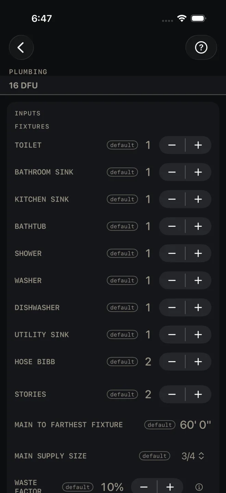
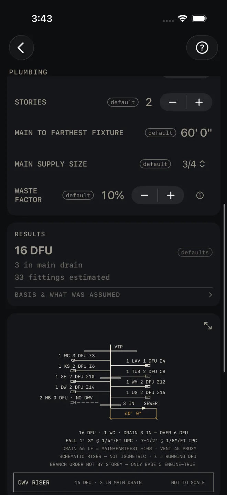
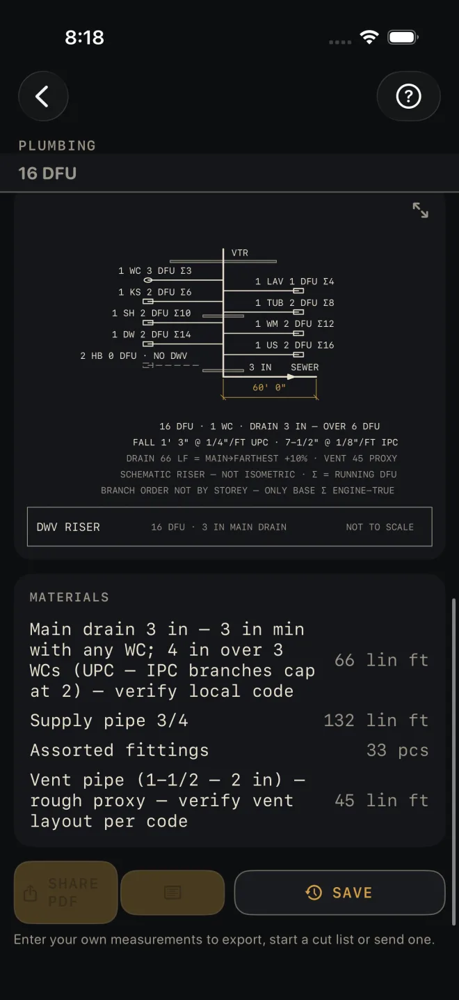

Plumbing
What it's for
A rough-in takeoff from a fixture count. Set how many of each fixture the house has and you get the total drainage fixture units, a main drain size, a fittings estimate, a riser drawing, and a material list of drain, supply and vent pipe. It is an estimate for pricing and ordering. Nothing on the results card passes or fails, and it does not lay out or size the branches.
Step by step
The example is the screen as it opens: one of each fixture, two hose bibbs, two stories, 60' 0" from the main to the farthest fixture.

1 2 3 4- Under FIXTURES, set the count of each with − and +: TOILET, BATHROOM SINK, KITCHEN SINK, BATHTUB, SHOWER, WASHER, DISHWASHER, UTILITY SINK and HOSE BIBB. The list is fixed. Set a fixture to 0 if the job has none.
- STORIES — how many floors have plumbing. It multiplies the supply pipe run and nothing else. The example is 2.
- MAIN TO FARTHEST FIXTURE — the pipe route from where the main comes in to the fixture farthest from it, measured the way the pipe will run. The example is 60' 0".
- MAIN SUPPLY SIZE — 1/2, 3/4, 1, 1 1/4 or 1 1/2. It names the supply pipe row in MATERIALS. It does not change any number. The example is 3/4.
- WASTE FACTOR — extra pipe and fittings, in steps of 5%. The example is 10%.
- Read RESULTS: 16 DFU, 3 in main drain, 33 fittings estimated.
- Tap BASIS & WHAT WAS ASSUMED to see which code tables the fixture units and the drain size come from.
- Scroll down to the riser drawing.
- Read MATERIALS for the order.
Reading the results

6 7 8
9The headline is the total drainage fixture units: each fixture's count times its unit value, added up. A hose bibb has no drain, so it adds nothing. The drawing shows every fixture's value and the running total, from 1 WC 3 DFU Σ3 to 1 US 2 DFU Σ16 in the example.
The main drain line is the size picked for the building drain from the total and from how many toilets there are. The first note under the drawing says why. In the example: 16 DFU · 1 WC · DRAIN 3 IN — OVER 6 DFU. With no fixture that drains, the line reads supply only — no DWV and the drain and vent rows leave the material list.
Fittings estimated is a rule of thumb, a few fittings for every fixture, with waste added. Treat it as a starting count.
BASIS & WHAT WAS ASSUMED opens to one line naming the IPC tables the fixture units and the drain size are taken from, and the value used for a washer standpipe. If you work to a different code, check your own table.
The drawing is a schematic riser: the stack with its vent through the roof (VTR), a branch for each fixture, and the building drain running to the sewer with your run dimensioned. The fixture tags are WC toilet, LAV bathroom sink, KS kitchen sink, TUB, SH shower, WM washer, DW dishwasher, US utility sink and HB hose bibb. The engine does not work out slope. With a 3 in or 4 in drain the drawing prints the fall over your run twice, once for each model code, and labels them (with a 2 in drain both codes agree and it prints one fall): FALL 1' 3" @ 1/4"/FT UPC · 7-1/2" @ 1/8"/FT IPC in the example. Two notes say the riser is schematic, not isometric, and that the branches are not arranged by story. Only the total at the base is a calculated figure. Pinch to zoom, drag to move around, double-tap to reset, or tap the expand button at its top right for the whole screen. See Reading the drawing.
MATERIALS, with waste added and rounded up:
- Main drain — your MAIN TO FARTHEST FIXTURE run. 66 lin ft in the example. The row carries the sizing rule after the dash: 3 in min with any toilet, 4 in over three — verify local code.
- Supply pipe — the same run once for every story. 132 lin ft in the example.
- Assorted fittings — the fittings estimate. 33 pcs.
- Vent pipe — a rough proxy at about two-thirds of the drain run. 45 lin ft. The drawing labels it PROXY for the same reason. Work out the real vent layout before you order. The row says so too: rough proxy — verify vent layout per code.
The buttons wait for your own numbers: SHARE PDF and the list icon in it stay dimmed, and a tap on SAVE only answers Enter your job's numbers first. After that SHARE PDF shares the riser, the counts, your fixtures and the materials, the list icon at the right end of the same button shares the material list alone, and SAVE puts the result in History. The PDF footer reads Estimate — verify dimensions and local code before cutting/ordering. Your local code and your inspector govern pipe sizes, slope and venting.
Common mistakes
- Measuring MAIN TO FARTHEST FIXTURE in a straight line. Every pipe length in MATERIALS comes from this one number. Measure the route.
- Taking the pipe footage as the whole job. It is one run to the farthest fixture, not every branch. Add your branch lines.
- Expecting MAIN SUPPLY SIZE to be checked. It is a label for the material row. The screen does not size the supply.
- Using the wrong code's slope. At a 3 in or 4 in drain the drawing prints the fall for both model codes because they differ. Use the one your jurisdiction adopts.
Related
- Water Heater — size the heater for the same fixtures
- Electrical — the other rough-in takeoff
- Grade / Slope — fall over a run
- Reading the drawing
- Cut sheets and templates
- Saving and History